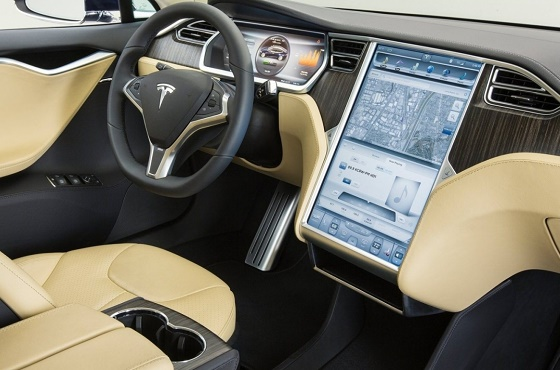
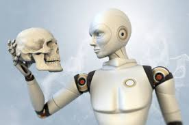

Yapay zekâ, bir bilgisayarın veya bilgisayar kontrolündeki bir robotun çeşitli faaliyetleri zeki canlılara benzer şekilde yerine getirme kabiliyeti. İngilizce artificial intelligence kavramının akronimi olan AI sözcüğü de bilişimde sıklıkla kullanılır. Yapay zekâ çalışmaları genellikle insanın düşünme yöntemlerini analiz ederek bunların benzeri yapay yönergeleri geliştirmeye yöneliktir. Bir bakış açısına göre, programlanmış bir bilgisayarın düşünme girişimi gibi görünse de bu tanımlar günümüzde hızla değişmekte, öğrenebilen ve gelecekte insan zekâsından bağımsız gelişebilecek bir yapay zekâ kavramına doğru yeni yönelimler oluşmaktadır. Bu yönelim, insanın evreni ve doğayı anlama çabasında kendisine yardımcı olabilecek belki de kendisinden daha zeki, insan ötesi varlıklar meydana getirme düşünün bir ürünüdür. Bu düş, 1920'li yıllarda yazılan ve sonraları Isaac Asimov'u etkileyen modern bilim kurgu edebiyatının öncü yazarlarından Karel Čapek'in eserlerinde dışa vurmuştur. Karel Čapek, R.U.R adlı tiyatro oyununda yapay zekâya sahip robotlar ile insanlığın ortak toplumsal sorunlarını ele alarak 1920 yılında yapay zekânın insan aklından bağımsız gelişebileceğini öngörmüştü.

Bilgisayar bilimlerinin karmaşık görevleri insanlar olmaksızın yerine getirecek makinleler ve yazılımlar oluşturmayı hedefleyen alanına denir. Bu alan diğer bilgisayar bilimi alanlarından daha yeni olmasına rağmen bir çok büyüleyici sonuçlar elde ettiğimiz bir alandır. Oyunlardaki bizim tarafımızdan yönetilmeyen botlar,öğrenen makineler ki son zamanlarda sürücüsüz araç teknolojisi buna örnek olarak verilebilir. Yapay zekayı doğru anlamak için bu alandaki çalışmaların hali hazırda iki yol üzerinden gittiğini bilmek gerekiyor. Birincisi mühendislik diğeri ise insanı anlayamaya çalışan yoldur.

| Yapay Zeka | Gelişim | Bilim Adamları | Olaylar | Dönem |
| 1950 | ilk makale | alan turing | Makalesini yazdı | 2.Dünya Savaşı Sonrası |
| 1969 | Robot Shakey | Bertham Rapheal Nils Nillson |
Çevresi hakkında akıl yürüterek kendi eylemleri hakkında kararlar verebilen ilk robottu. | Soğuk Savaş Dönemi |
| 1998 | Half Life | Gabe Newell | Yapay Zekanın oyuna aktarılması | 2000lere doğru |
| 2014-2017 | Tesla Arabası | Martin Eberhand ve ekibi | Günlük hayatta kullanılan şoforsüz otomobiller elektrikli motorlar gibi teknolojilerin meydana gelmesi | Günümüz |